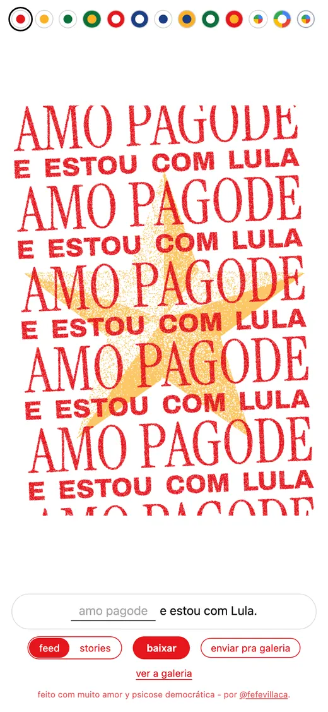
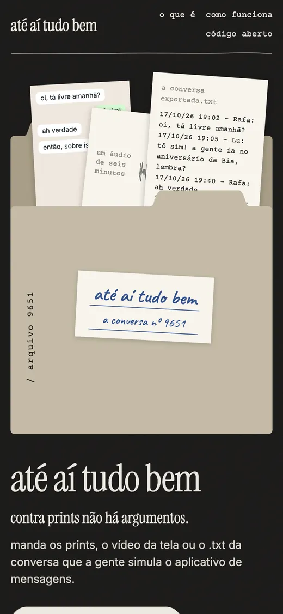
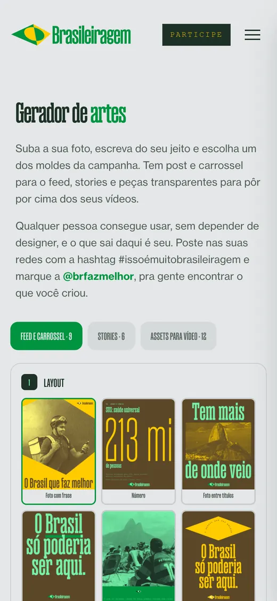

vibe coding
Things I built with AI agents, usually the kind of idea that needs to be (or that I want to be) up and running by the next morning.
-

A post generator for the second round of the presidential election, where anyone picks one of thirteen styles, finishes the sentence and downloads a feed or stories piece ready to share. lulygenerator.love → luly generator -

An app that turns a chat screenshot back into a phone screen, so a conversation can be opened and read message by message. fefe.garden/ateaitudobem → até aí tudo bem -

The art generator of Brasileiragem, the Sleeping Giants Brasil platform, where partners and voters make their own pieces inside the campaign’s visual identity. votenobrasil.com.br/gerador → brasileiragem generator